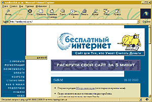
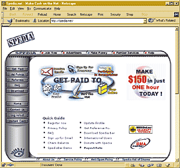
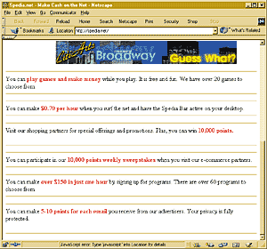
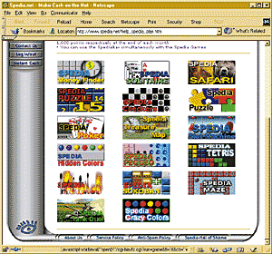
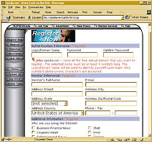
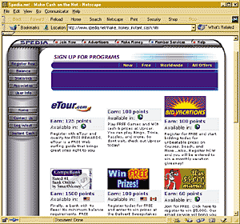
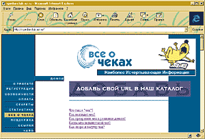
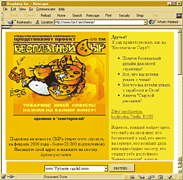
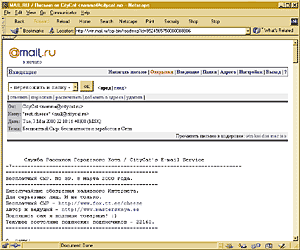
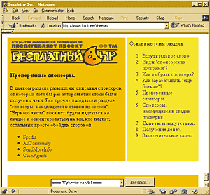

Самоокупаемость - в Сеть!
Алексей Панишев
Занимаясь как-то под вечер привычным серфингом на просторах Сети, я
наткнулся вдруг на прелюбопытную ссылочку. "Бесплатный Интернет", - так
назывался сайт. И ладно бы это была ссылка с какой-нибудь никому не известной
домашней страницы, - так нет, находилась она на самом Rambler! "Очень интересно,
- подумалось мне, - надо проверить..."
Так я и оказался на spedia-club.az.ru, "Сайте для Тех, кто Умеет Считать Деньги"
(цитата). Заранее хочу предупредить заинтересовавшихся: по какому-то капризу
исходного кода страничку невозможно просмотреть в броузерах компании Netscape. В
Internet Explorer же - пожалуйста, сколько угодно. Самое обидное, что Netscape
честно считывает оттуда данные (что можно проследить по информационной строке в
нижней части окна), закачивает картинки и текст, а потом просто пишет Document
Done и ничего кроме обоев визуализировать не хочет. В чем именно тут дело - я
разбираться не стал. А если говорить о хорошем тоне Web-дизайна, то признаком
тщательно сделанной странички является возможность просматривать ее в любых
броузерах, а не только в том, которым пользуется сам автор. Но это так, мелкое
замечание к слову. Internet Explorer ведь входит в комплект поставки любой
версии Windows 9x и 2000.

<Бесплатный Интернет>: сайт, с которого все
началось. Здесь и вправду предлагаются дельные советы по поводу того, как
заставить Internet работать на вас, - а не вас на него.
Итак, сайт посвящен тому, как снять бремя оплаты провайдеру за работу (или
тот же серфинг) в Internet с рядового пользователя. Именно рядового, выходящего
в Сеть из дома по модему. Ведь те, у кого на работе есть выделенная линия, за
редким исключением и так получают доступ во Всемирную паутину бесплатно. Но
работа работой, а как быть, если хочется выбраться в Сеть "для себя"? Не
нервничая при этом от того, что в любую секунду в дверь может войти начальник и
поинтересоваться, чем вы занимаетесь в рабочее время и на рабочем месте?
Остается, как ни крути, домашний компьютер и верный модем. Одна беда:
неограниченный доступ в Сеть, "анлимитед", как привычно называют его
пользователи, ощутимо дороговат даже в крупных городах: не менее $50-60 в месяц.
Для тех, кто днем занимается работой, есть и облегченные тарифные планы -
скажем, дорогой дневной выход, но зато вечер и ночь по сниженной цене, но даже
при таких послаблениях меньше чем в $25-30 в месяц уложиться трудно.
Internet-карты удобны только возможностью оперативного применения; выигрыша в
цене за час пользования Сетью они не приносят. Так что же делать
старшеклассникам, студентам, бюджетникам, для которых и $20 в месяц - заметная
сумма?

Сайт Spedia, наиболее известного у нас рекламного
спонсора. Здесь вы можете незамедлительно зарегистрироваться и начать
зарабатывать свой трудовой цент.
Можно, конечно, отправиться в Германию, получить вид на жительство и через
несколько лет стать гражданином славного города Гамбурга. Почему именно
Гамбурга, - да потому, что именно там в начале марта этого года городской Совет
принял закон, согласно которому всем гражданам предоставляется (и обеспечивается
за счет муниципалитета) бесплатный круглосуточный доступ во Всемирную паутину,
электронный почтовый ящик и домашняя страничка. Покупка модема и компьютера,
разумеется, остается личным делом каждого гамбуржца, но уж если все необходимое
оборудование в наличии имеется, проблем с выходом в Сеть не возникнет.
Постановление вступит в законную силу к осени, так что у особо нетерпеливых
любителей бесплатного Internet еще есть время подсуетиться и заняться
оформлением документов.

Спонсорские программы, которые предлагает Spedia. Не
стоит гнаться за участием во всех подряд - выберите те, которые лучше всего
соответствуют вашим возможностям и наклонностям.
А если вернуться на грешную (но тем не менее родную) землю, то картина
складывается менее радостная. До счастливой доли гамбуржцев (гамбуржан?
гамбуржчан?) нам пока далековато, но вот надежда найти источник оплаты своих
счетов за Internet есть. И надежда достаточно реальная. Надо только припомнить
дурманяще-сладкое слово "спонсор".
Поскольку спонсоры бывают разные и бескорыстных среди них нет (бескорыстный
спонсор называется меценатом; вид этот достаточно редкий и в наше время почти
исчезнувший), надо сразу определиться, о чем мы будем вести сейчас речь. А
именно: о спонсорах, которые (внимание!) оплачивают сам факт просмотра рекламы,
доставляемой вам непосредственно Internet.
Помните, в середине прошлого года на Западе была популярна такая акция, как
"компьютеры за рекламу"? Фирмы, специализирующиеся на маркетинговых
исследованиях, раздавали добровольцам (!) бесплатно компьютеры (как правило,
современные Dell или Compaq) с предустановленной не только ОС Windows, но и
специальной программой-транслятором рекламных баннеров. Пользователи не имели
права удалять или деактивировать эту программу, в остальном же им позволялось
использовать компьютеры для каких угодно целей. Смысл акции (для спонсора)
заключался в том, что время от времени пользователи щелкали мышью по
заинтересовавшим их баннерам и изучали рекламные предложения. А еще при
получении компьютеров все они заполняли подробную анкету, где указывались их
доход, уровень образования, хобби, предпочтения и т. д. Получалась достаточно
ясная картина распределения рекламы различных групп товаров и услуг по разным
категориям потенциальных клиентов. И затем эта информация использовалась
маркетинговыми фирмами для выработки консультаций производителям этих самых
товаров и услуг: на какой рынок будет ориентирована их продукция и какого уровня
покупательского спроса следует ожидать. Результаты акции оказались, по-видимому,
настолько успешными для исследователей, что в конце нынешнего февраля проект был
законсервирован - началась разработка нового ПО и более прогрессивных схем
изысканий, - а сами компьютеры были подарены счастливым
пользователям-добровольцам. Просто подарены. Переданы в полное владение,
пользование и распоряжение, даже с сохранением технической гарантии
фирмы-производителя. И пусть кто-нибудь после этого осмелится утверждать, будто
Internet-коммерция обречена на неудачу!
Опять-таки возвращаясь к нашим реалиям, отметим, что проект "компьютеры за
рекламу" пока не предполагается проводить в жизнь в России. И тем не менее
спонсоры, готовые по крайней мере платить за просмотр их баннеров и посещение
рекламируемых сайтов, имеются. О них как раз и рассказывается на страничке
"Бесплатный Интернет". Поговорим о них и мы с вами.
А так выглядит знаменитый viewbar, загружаемый с
сайта спонсора и висящий в активном состоянии на вашем Рабочем столе. Щелкнув
мышкой по баннеру, вы через свой стандартный броузер попадаете на сайт
рекламодателя и получаете от спонсора бонус.
В чем суть деятельности таких спонсоров, как, скажем, знаменитая Spedia? Да, они платят за рекламу, и
есть уже в России и СНГ люди, реально получавшие от них чеки. Но самим-то
спонсорам что за выгода? А выгода, оказывается, есть. Прежде всего, спонсоры
платят не за рекламу своих товаров - они вообще ничего не продают, а только
являются передаточным звеном между сайтами-рекламодателями и конечными
пользователями. Таким образом, рекламодатель платит спонсору за то, что тот
демонстрирует его баннеры нам, пользователям, и именно из этой суммы спонсор
выделяет вознаграждение нам же за просмотр той или иной рекламы.
Откуда берутся деньги у рекламодателя? Естественно, от продажи товаров.
Поэтому первый (и наименее утешительный для нас) вывод таков: чем меньше
реальных продаж у рекламодателя, тем меньше денег он выделяет спонсору и тем
меньше получаем мы с вами. Значит, кто-то рекламируемые товары все же должен
покупать. Вот почему, кстати, до последнего времени такое спонсорство не
охватывало территорию бывшего СССР: о нашем среднем уровне жизни на Западе
наслышаны. Но понемногу стремление расширить рынок брало верх над осторожностью,
и вот уже Spedia вместе с несколькими другими аналогичными компаниями активно
осваивает просторы России и ближнего зарубежья. Какие доходы это приносит ей и
рекламодателям - вопрос, нас пока что не интересующий; важно, что нам с вами от
этой деятельности хоть немного, да может перепасть.

Онлайновые игры Spedia с возможностью получить в
качестве приза определенное (иногда - большое) число призовых очков на ваш
счет.
Существует три основных направления такого спонсорства: плата за показ
рекламных баннеров посредством специального ПО, загружаемого с сайта спонсора
(так называемый viewbar); отдельно - плата за кликанье по этим баннерам и
просмотр уже полноценной информации о товаре/услуге на сайте рекламодателя; и,
наконец, плата за получение вами в почтовый ящик рекламных электронных
писем.
Расценки (у солидных и уважаемых спонсоров) примерно таковы: $0,3-0,6 за час
работы viewbar; $0,005-0,05 за каждый щелчок мышью на баннер во viewbar;
$0,03-0,06 за каждое полученное письмо. Внимание! Если на каком-то сайте вам
сулят златые горы (т. е. расценки в два-три и более раз превышающие указанные
здесь) в обмен на пользование именно их услугами - ни в коем случае не
соглашайтесь! Это, как правило, аферисты (проще - жулики), которые будут
использовать данные вашей регистрации в "пирамиде", действительно загребут кучу
денег, а вам в итоге достанется пшик.

Регистрация на сайте спонсора хоть и не сложна, но
требует тщательного заполнения всех форм и постоянного самоконтроля. Помните!
Если вы ошибетесь и укажете неправильные данные - честно заработанный чек вполне
может затеряться в дороге!
Кстати, "пирамида" в применении к Internet-спонсорам вовсе не содержит той
отрицательной окраски, что придала ему наша реальная жизнь после громких
скандалов с "Тибетом", "Русским домом Селенга" и МММ. Корректнее "пирамида"
называется "системой рефералов" и подразумевает следующее. Если новый человек
приходит на сайт спонсора и начинает пользоваться его услугами не сам по себе, а
при вашем посредничестве, то вы получаете определенное вознаграждение за каждый
просмотренный им баннер или полученное письмо. Вознаграждение небольшое (скажем,
за адресованное ему письмо он получает 4 цента, а вы - 1), но зато если вы
привлечете несколько (а лучше - много) рефералов, то прибыток будет достаточно
ощутимым. У разных спонсоров "пирамиды" устроены по-разному. Кто-то поддерживает
одноступенчатую систему рефералов да еще и с ограничением по числу (скажем, не
более 20 человек - за 21-го вы уже не получите ни цента, хоть тащите его в
контору на веревке). Другие спонсоры, наоборот, не ограничивают ширину пирамиды
и вдобавок платят за дополнительные уровни. Скажем, сагитировал вовлеченный вами
в систему гражданин еще кого-то - он получает за новичка так же, как вы за него
самого, да плюс еще и вам лично доплачивают за этого новичка (правда, совсем уже
немного - не более 10-15% от начального вознаграждения). Это называется
"двухступенчатой пирамидой". И опять-таки, небольшой размер взносов за каждого
реферала второго уровня компенсируется их (вероятной) многочисленностью, Т. е.
все в конечном итоге зависит от организаторского таланта - вашего и "ваших
людей". Активнее будете привлекать народ - больше станете получать звонкой
(пардон, хрустящей) монеты.

Дополнительные программы Spedia; участие в каждой из
них подразумевает вознаграждение. Впрочем, все они, как правило, связаны с
реальными товарами и услугами, предоставляемыми за пределами России, и для нас
не сильно подходят.
С рефералами разобрались. Те-перь - о собственно сервисе. Рассмотрим
вхождение "в систему" на примере именно Spedia, поскольку как раз от этого
спонсора реальным людям в России приходили уже реальные чеки. Итак, попав на
сайт компании, вы первым делом можете ознакомиться с перечнем текущих
спонсорских программ в нижней части экрана:
- играйте и получайте деньги (набор игр, поддерживающих этот сервис,
приводится тут же, на сайте, - в них вы можете набрать дополнительные очки);
- если вы просто занимаетесь серфингом по Сети и у вас среди прочих активных
приложений работает и Spedia viewbar, вы получаете 70 центов за час;
- кликая по баннерам, появляющимся во viewbar, вы попадаете на сайты
рекламодателей Spedia. Угодив на заранее не объявляющийся "сайт недели", вы
имеете шанс прибавить к своему счету 10 тыс. очков (очки затем переводятся в
доллары по плавающему внутреннему курсу Spedia - примерно 2-3 очка за цент);
- еще 10 тыс. очков можно заработать и вообще на любом из сайтов
рекламодателей - просто по прихоти генератора случайных чисел Spedia;
- если подписаться на одну или несколько из более чем 60 платежных программ
Spedia, то есть шанс зарабатывать чуть ли не $150 в час. Однако будьте
бдительны - ограничений (явных и неявных) там столько, что вряд ли ваш бюджет
удастся пополнять такой значительной суммой, да еще и постоянно;
- за каждое электронное письмо с рекламой, полученное вами от Spedia, на ваш
счет начисляется 5-10 очков, причем письма можно и не читать - учитывается сам
факт прихода. Представляете, как удобно? Всего-то нужно раз в неделю чистить
почтовый ящик от рекламных писем, а денежка капает...

Вот, кстати, неплохое руководство по получению,
заполнению и обналичиванию банковских чеков.
Каждый вариант зарабатывания денег на спонсоре имеет свои хитрости и
ограничения. Прежде всего, спонсор - естественно! - заботится о том, чтобы его
не надували. Показ баннеров в окошке программы - вещь хорошая, но требует
непрерывного сидения у монитора. Зачем? Да чтобы установленный в Windows по
умолчанию режим энергосбережения не притормозил жесткий диск после, скажем,
получаса вашего бездействия за машиной, т. е. когда вы отправились спать или
выгуливать собаку. Но ведь время - деньги! Поэтому сметливые пользователи первым
делом отключают режим "засыпания"...
...и тут же натыкаются на вторую линию обороны спонсоров. Хорошо, пусть
жесткий диск постоянно крутится на полных оборотах, а монитор не гаснет (запуск
скринсейвера некоторые viewbar тоже отслеживают и реагируют соответствующим
образом). Но если вы при этом спите, то активности от устройств ввода информации
- клавиатуры и мыши - все равно не наблюдается! И удовлетворенный viewbar через
полчаса такого "спокойствия" сообщает на сервер спонсора, что начисление сумм на
ваш счет можно приостановить: все равно вы спите и баннеров не видите.
Однако Россия, как известно, богата самородками. Зафиксирован по крайней мере
один случай изобретения специального устройства для... шевеления мыши! На основе
двигателя от старого CD-ROM, пары редукторов и трансформатора современный
Кулибин соорудил "механическую руку". Конечно, до знаменитой руки Геца фон
Берлихигена ей пока далеко, но вот совершать круговое движение мышью раз в
пять-десять минут она способна. Бедные программы контроля, встроенные во
viewbar, конечно же не рассчитаны на такой удар в спину - и честно подтверждают
неугомонную активность умельца-пользователя. Что, собственно, тому и
требовалось.
Есть и гораздо более грубые, чисто программные способы "накручивания"
счетчика показанных viewbar баннеров - но они спонсорам уже известны и
сравнительно легко опознаются. Если вы решите установить у себя viewbar и
попытаться воздействовать на него такой программой-взломщиком, имейте в виду,
что при обнаружении этого спонсор просто отключит вас от своего сервиса,
аннулировав весь счет и занеся ваши данные в "черный список". Оправдаться перед
спонсором после использования программных "накруток" не удавалось еще никому, по
крайней мере, на территории бывшего СССР. В конце концов, если вы видите, что с
вами играют честно, почему бы и не постараться в свою очередь быть честным?
Кстати, обратимся к вопросу оплаты более предметно. Фраза "...пришлют чек",
постоянно употребляемая в данной статье, интуитивно, может быть, и понятна, но
вот как это выглядит "в жизни"? Да очень просто. Длинная, узкая и такая красивая
бумажка с водяными знаками.
На сайте спонсора при регистрации вам придется заполнить обширную анкету,
где, среди прочего, надо будет указать и свои (реальные) имя, фамилию и адрес.
Вот по этому адресу для вас и вышлют чек. Это именной банковский документ,
деньги по которому сможет получить только тот, чье имя в нем указано, - так что
анонимность не сыграет вам на руку в этом случае. Обналичить чек, т. е. получить
по нему настоящие деньги, можно в любом приличном банке. Правда, времени это
занимает от пары недель до месяца. Перевод денег чеком - наиболее медленный из
всех возможных способов, но традиционно и наиболее надежный. Более подробно обо
всей этой технологии можно прочитать на сайте, с которого мы начали, -
"Бесплатный Интернет" (раздел "Все о чеках").

<Бесплатный Сыр> - эстонский сайт о разнообразных
рекламных спонсорах, действующих на территории бывшего СССР. Великолепный дизайн
и очень хороший стиль изложения подкупают.
Вообще, этот сайт действительно очень полезен при работе со спонсорской
программой Spedia. А если вас помимо нее заинтересовали и другие источники
заработка в Сети, то могу порекомендовать очень насыщенный и оперативный сайт
"Бесплатный Сыр".
Сайт построен на основе информации, распространяемой автором (имени которого
ни на одной страничке сервера я, к сожалению, не обнаружил) в рамках одноименной
почтовой рассылки. Выходит рассылка приблизительно один-три раза в неделю,
выгодно отличается от множества аналогичных как изяществом и ясностью слога
автора, так и безусловной полезностью предоставляемых им сведений. То же в
полной мере можно отнести и к самому сайту. Если, скажем, в разделе "Проверенные
спонсоры" приводятся названия нескольких компаний, то это значит, что все они в
свое время хотя бы один чек, но прислали автору и с обналичиванием суммы проблем
не возникло. "Спонсоры, находящиеся в стадии проверки", - это те, кто пополняет
пока что виртуальный счет автора "Бесплатного Сыра", но до отправки "живых"
денег еще не добрался. (Надо сказать, что критерий начала выплат у каждого
спонсора свой: кто-то отправляет чек, когда заработанная вами сумма превышает
$30, кто-то - после $100 и т. д.; не забудьте поинтересоваться этой деталью на
сайте спонсора!)

Рассылка <Бесплатного Сыра> в системе Subscribe.ru
позволит вам узнавать все новости <самоокупаемого Internet> из первых рук и
очень оперативно. Не поленитесь подписаться, если эта тема вас
интересует!
Еще раз хочется подчеркнуть: не надо, не надо пользоваться "услугами"
программ-взломщиков, которые эмулируют движение мыши или просто накручивают
счетчик баннеров. Обычное, нормальное для среднестатистического пользователя
отношение числа посещенных рекламных страничек к числу показанных баннеров
составляет не более 5%. Если оно выше - пеняйте на себя; спонсор оставляет за
собой право прервать действие сервиса без предупреждения при первом подозрении
на нечестную игру. И это справедливо: ему достаются проценты от выручки за
реально проданные рекламодателями товары. Зачем же кормить шулеров?
Ознакомьтесь, пожалуйста, на сайте "Бесплатный Сыр" с разделом "Советы и
напутствия", там собраны вполне разумные и выполнимые правила поведения. Если им
следовать, имея при этом дело с проверенными и надежными спонсорами, небольшой,
но стабильный доход вам обеспечен. Доход, которого вполне может хватить на
оплату вашего пребывания в Сети. А может быть, и не только!
О том, как именно выбирать спонсора, можно прочесть в соответствующем разделе
все того же "Бесплатного Сыра". Общее правило: тщательно взвешивайте все
предложения, которые вам делают. Не покупайтесь на совсем уж бесстыдную "халяву"
вроде обещаний без всяких дополнительных условий выплачивать вам по $20 за
каждый клик. Не бывает такого! Смысл мошенничества чаще всего такой: вас
приглашают зарегистрироваться не непосредственно в системе спонсора, а на сайте
самого афериста. И мало того что он получает за вас премию как за реферала, - у
него имеется полный доступ к вашим регистрационным данным, которые в последний
момент перед переводом заработанных очков в реальные деньги он, естественно,
подменит своими. Так что вы не увидите даже того, что по праву вам причитается.

Проверенные автором <Бесплатного Сыра> спонсоры
заслуживают всяческого доверия.
Конечно, идеальный вариант - пользоваться услугами только лишь проверенных,
заведомо надежных спонсоров. Но их не так уж и много, а число клиентов их
"пирамид" растет гораздо быстрее числа их же рекламодателей. Вспомните
арифметику: если числитель увеличивается незаметно, а знаменатель - очень
сильно, то в результате дробь... правильно, уменьшается. Это значит, что у
уважаемого и серьезного спонсора с массой клиентов средняя выплата за клик или
за письмо будет (при примерно постоянном числе рекламодателей) сокращаться. С
другой стороны, какая-нибудь свежая компания-спонсор, только-только начинающая
набор клиентов, вполне может оказаться и честной. Вовремя ухватившись за такой
сервис, вы можете вполне ощутимо заработать именно в самое первое время, когда
делить полученную от рекламодателей прибыль надо будет на не слишком большое
число пользователей. Так что, любители риска и шампанского, - дерзайте! Совсем
уж последний совет: сейчас ни одна сколько-нибудь серьезная компания в Сети не
позволяет себе уделять слишком мало внимания дизайну сайта. И если вы видите
коряво, топорно сделанный сайт, да еще и с неряшливыми, бесцветными баннерами на
нем - отступитесь. Скорое всего, это наскоро сляпанная ловушка для
простофиль.
Теперь, надеюсь, у вас имеется начальное представление о том, что такое
"бесплатный Internet". Это не привычная "халява" в том смысле, что кто-то другой
платит за часы, проведенные вами в Сети. "Бесплатный" - значит, оплаченный
вашими же усилиями, но усилия эти совмещены с собственно погружением во
Всемирную паутину и не являются чем-то обременительным или нечестным.
Первоначальный размер такого заработка, конечно же, невелик, но привлекая новых
людей в "пирамиды" солидных спонсоров и подключаясь к новым и новым службам, вы
вполне можете достигнуть определенного уровня дохода, который как раз и позволит
сделать ваш Internet - нет, не бесплатным, а самоокупаемым. А ведь проводятся
еще и лотереи, в которых можно выиграть дополнительные очки или реальные призы;
есть приятные сюрпризы, скрытые на сайтах самих пользователей и их
рекламодателей... Так что главное здесь - иметь желание заработать и не
лениться. Об остальном уже есть кому позаботиться.
Теперь вы готовы начать?